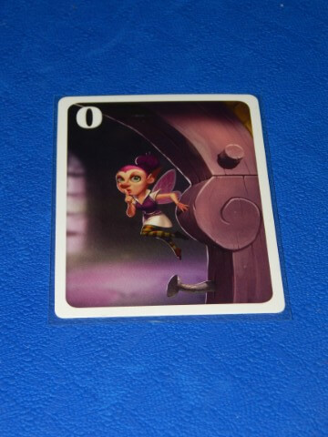
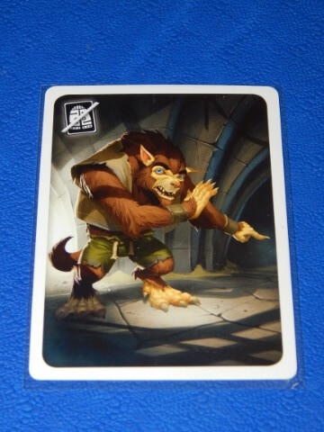
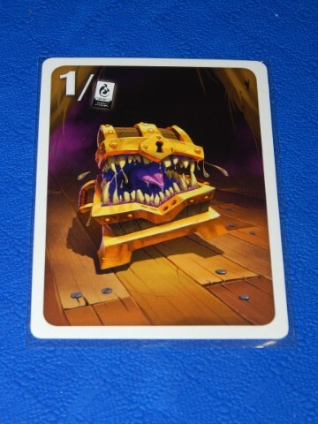
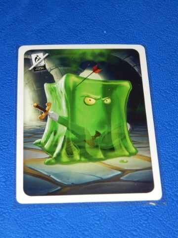
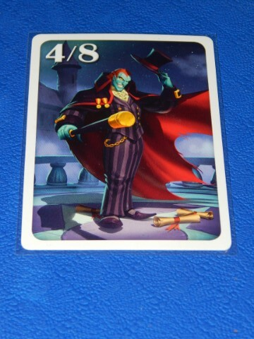
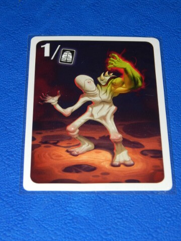

Description of Special Monsters
Check ukrainian version of this page
◄ Previous | 🚪 Main 🚪 | Next ►
Fairy
The Fairy has a strength of 0 and is considered to be an even-strength Monster. She has no effect.

Ally
The Ally has no strength (and is therefore neither even- nor odd-strength), but he allows you to ignore the next Monster in the Dungeon.

Mimic
The Mimic has a strength equal to the number of Equipment tiles you still have when you face it in the Dungeon. Its strength can vary from 0 if you have no more Equipment to 6 if you have every Equipment tile when you face it.

Gelatinous Cube
The Gelatinous Cube has no strength (and is therefore neither even- nor odd-strength), but instead makes you discard an Equipment tile of your choice.
If you have no more Equipment when you face the Gelatinous Cube, ignore it.
If you choose to discard an HP+ Equipment, immediately lose the number of HP indicated by this Equipment. Then move the Dragon token on the HP board to the new total.

The Count
The Count becomes a Vampire with strength 4 if you don’t have a Success card. However, he loses his Vampire identity and gains a strength of 8 if you already have a Success card.

Shapeshifter
The Shapeshifter takes on:
- Strength equal to its position in the Dungeon: if it’s the fourth Monster you face, its strength is 4, but if it’s the seventh Monster you face, its strength is 7, and so on.
- The identity of the corresponding Monster: if it’s the fourth Monster you face, the Shapeshifter becomes a Vampire with strength 4.
Note: If you face the Shapeshifter after your ninth Monster in the Dungeon, it will take on the strength of its rank in the Dungeon, but will have no identity.
Example: You face the Shapeshifter as the tenth Monster in the Dungeon, so it has a strength of 10 and no identity.

◄ Previous | 🚪 Main 🚪 | Next ►